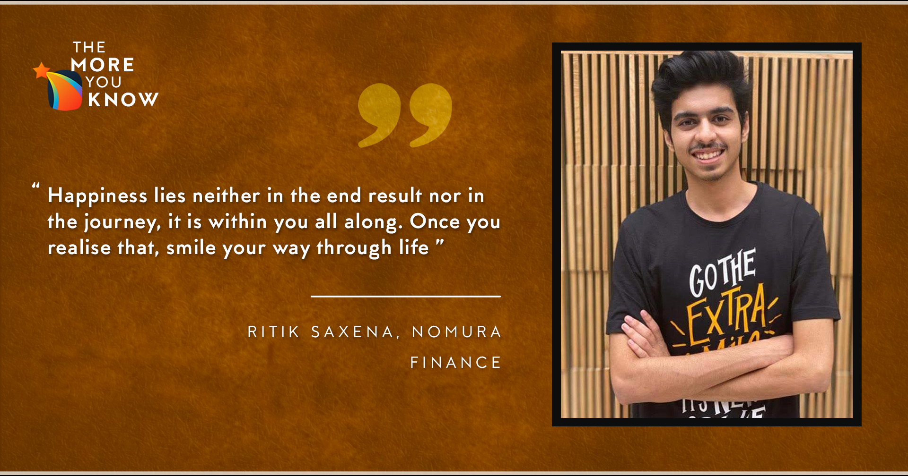

May 29, 2021
Hemlo there!
I am Ritik Saxena, a Y18 in the department of Electrical Engineering. Tbh, I was surprised when I got
this opportunity to pen down my preparation journey for the summer internships. But I do have some
things to tell that I feel could be of great use to you during the tides coming your way (don’t be
scared, be alarmed). What I am going to share in this blog is the journey I went through, the thoughts I
had before choosing a particular profile, the strategies of my preparation, the experiences of
rejections, how I got over them and finally made it into an Algo Strategies Intern at Nomura Structured
Finance. I hope some parts of this attempt of mine resonates with you and helps you steer through those
tides unscathed. Since I prepared for technical roles, if you are not preparing for the same, skip to
judgment day(s) struggles. Everyone goes through a similar time irrespective of the profiles.

The R Factor:
The importance of the R factor - the Resume, must have been stressed upon enough already in earlier blogs.
So, I’ll quickly tell you about the biggest mistake I made. I didn’t start making a resume up until July,
and this is something you should NOT do. “Ignorance is not bliss, in this case, my friends.” You won’t be
able to finish your resume even in a week so start at least a month before. My resume was primarily
technical; projects were either software or machine learning related. My CPI at the end of the 4th
semester was 8.7. I had done two internships, one in the first year summer in CSE Summer Of Code and the
second one on Reinforcement Learning, which I secured through LinkedIn for the sophomore summer. I was a
Company Coordinator at SPO. I had just become the head of SnT Team VISiON, which was the only big POR in
my resume.
Wrapping up everything in one page is one heck of a task. There is no perfect resume, but there is a best
version of yours. Turn yours into that one. Get into the shoes of the interviewer and look at your resume.
You’ll understand exactly what you need to change. Get as many seniors as you can to review your resumes.
Keep it short, highlight important terms and keep it tidy. It's gonna be mundane and tiring, but no good
thing ever comes without pain. Make your R Factor as strong as you can.
Oops...Profile Not Selected...
So even before profiles, you need to make a choice between an Academic and a Corporate internship. I
didn’t have any prior research experience, and so Academic Interns were a big no-no for me.
Now, to the Corporate internships. You must already know that there are 4 profiles in a broad sense:
Software, Techno-Managerial, Finance/ Quant, Core. There is no better way to choose a profile than
actually working on a project related to the same and getting a sense of it. There are clubs, teams, and
societies doing work that can help you get a hang of what you really like. And of course, you can contact
seniors and ask about their experiences and the little details of the profiles. For the core, you can do a
project under your professor on a topic of your interest. If understanding what you like is tough, list
everything and cross out what you don’t like.
Having worked in Web Dev in my first summers, I knew I didn’t like it. Also, I wasn’t very interested in
TechnoManagerial Roles. And the core never came close to the joy I felt making useful software snippets.
So, I started looking into other options: quant and finance during the summers. I took help from my friend
in the Finance and Analytics Club and learned about some basics. I read blogs and articles to understand
the roles in the profile. I was fascinated by the work, so I finally decided on my two options: Machine
Learning and Finance/ Quant. I tuned my resume to suit them, mentioning only those projects that were
related to the profile.
Before I move further, I’d like to honestly acknowledge that there is a lot of privilege that comes with
the branch, the biggest of which is the choice of profiles. A lot of companies don’t open for all
branches. So I would advise you to do this homework of how many companies open for your branch and what
all options of profiles you get to choose from. This is for the people who don’t fall in the lucky
branches. Don’t let this drag you down. A lot of my friends from your branch (ping me if you don’t believe
me, I’d set up a call with them :p) secured a really good intern due to their sheer hard work. So,
everything is still in your hands. Just aim right, prepare right and shoot!
Preparing Right:
Glad you survived the blog till now. After you have figured out the right profile for you, the time has
come to begin the hard part: Preparations.
I had done ESO207 in my third semester, which helped me dive right into competitive coding for the
Software and ML roles (CP is needed even for ML roles ^n^, you can’t escape from it). During the entire
summer, besides my internship, I regularly practiced questions from Interviewbit, leetcode and gave
contests on Codeforces. The fact remains that even the quant companies tend to give a section of coding
questions. So unless you chose TechnoManagerial or Core, you need to brush up on this skill. C++ remains
the favorite language for coding. The book
(https://cses.fi/book/book.pdf) covers everything you need to
know to crack a coding test. There are numerous articles on GfG which can be pretty handy.
For Quant, I revised my MSO201 notes. A course on Probability and Statistics definitely helps (M/HSO201).
You can also do the same on Coursera or someplace online to get your basics. Then I proceeded to solve 50
Problems in Probability and a book on Quantitative Finance by Xin Feng Zhou. Regular puzzle-solving on
Brainstellar with my friend used to be the fun highlight of the preparation days. We would screen share on
a Google Meet and solve problems together. Most of the Finance companies don’t expect you to be well
versed with the fintech jargons, but for basics, you can look upon Investopedia
(http://investopedia.com/)
and varsity
(https://zerodha.com/varsity/). The only thing
expected is a strong command over probability.
The following link (courtesy of Mr. Sahil Dhull) compiles all resources:-
https://docs.google.com/document/d/1SayYHVAfId5mACsOp0a0bmHJC0wM42gEi8qoxEyav7A/edit
I didn’t prepare much for the aptitude part of the tests as I felt I was still in touch with the basics.
But if you need, you can look at
https://www.pariksha.co/
The Judgement Day(s)..:
Just after a week or two of the 5th semester, the internship tests began. Day after day for a week or two,
numerous tests were lined up. The tests were more or less what I had expected (coding questions for
software roles, aptitude + probability questions for quant roles) but yet with each test passing, my
confidence stonked. It was one of the most stressful periods in my life. Even after all the preparations,
something or the other, be it lack of focus or too much thinking would lead to the test not going right. I
failed all my internship tests in the first week. At one point, I even regretted sitting for internships.
Yes, it can get that frustrating. Maintain a proper diet and sleep schedule. These were the main reasons
for my inadequate performance in the tests. Unless you keep a calm mind and a healthy body, you will fail
to be the best you and lose confidence bit by bit. If such a thing happens, quickly rush to the nearest
person in your family or your closest friend and let it all out. What helped me the most was talking with
my parents (especially my mother). I also began meditation. There are loads of really good guided
meditation videos on YouTube. Keep them in your armory, you might need them too.
After the tests for the companies coming on Day 1 and Day 2 are done, the struggles increase. Now, along
with tests, you need to give interviews for the ones you cleared the tests. So decide early on the
companies you want to sit for. Don’t give all tests just for the sake of giving. More than a hundred
companies come for internships. Sit for tests based on the job profile. Give your interest the most weight
in all such decisions.
After the tests, you get shortlisted for interviews. The interviews consist of many technical rounds and
an HR round. The technical rounds mainly begin with an introduction and your resume. You are grilled about
your projects and questioned about the technical terms. Maintain composure during the interviews. Don’t
start answering right away even if you know the answer. Ask for a minute to ponder and organize your
thoughts. Then answer the question piecewise. Always listen to the question properly. Keep a smile on your
face and be comfortable while answering. Even if you don’t know something, take a minute to think and
analyze it. You can admit that you don’t know but show eagerness to learn. Keep the ball in your court.
For example, “I think if given a chance I can learn about it and deliver, I get the gist of it but I don’t
know the specifics”.
Some quant and finance companies conduct group discussions. The AnC already does a good job in helping you
guys prepare for the same. Do participate in the mock GDs organized by it. You’ll get to know how to
improve yourself.
HR generally asks basic questions like, ”Have you worked in a team before?”, “Do you wish to go for higher
education?”, ”Tell me a stressful period of your life”, etc. You can find such questions on the internet
and also from the senior who interned at the company the previous summer. Always say NO to the higher
education question xD. Corporate companies do not like interns who want to pursue higher ed.
In my interviews, I was mostly grilled at my projects mentioned in the resume. I was asked probability
questions and a few coding questions. All interviews went really well and I smiled my way through them. HR
was mainly interested in why I was more inclined towards finance after having worked in ML and Software. I
expressed my interest in the domain of finance and reasoned how my work in other domains could help me
look at the problems from different perspectives and solve them in better or efficient ways. A few hours
after the HR round, I got an email notifying me of my selection. The moment will always be one of the most
joyous moments in my life.
In the end...
Sitting in the internship process and going through all those struggles is very exhausting yet a very
enriching experience. Something that really helped me was preparing with my friends. Not only can you all
keep a check on each other but also motivate you to work hard. The doubt solving becomes fun, and the
topics become easier to remember. The preparation journey is tedious, and repeating the same things day
after day quickly loses its charm. So choose the profiles most suited to you. It's completely alright to
not know, but it's never right to not make an effort to know.
"Happiness lies neither in the end result nor in the journey, it is within you all along. Once you
realise that, smile your way through life"
At last, the result of this preparation journey is not solely based on hard work. There is a lot of luck
involved too. The company of your choice might come at a later date, and you end up getting selected in a
less preferable one early on. You need to take tough calls on which company’s tests to give. Always
consult seniors before making such decisions.
Also, Internships are not an end of life, so even if you don’t get one, there is absolutely no need to
stress yourself. I know many seniors who managed to get a great placement without having done an
internship or seniors who entirely changed their career direction later. So why go through with it, you
might ask. Well, in the end, you’ll come out stronger and much more equipped after the entire journey. You
learn a lot of lessons and discover yourself in the process. So gear up guys, the tides are coming. Get
hold of the rudder, and good luck with the preparations. Bon Voyage!
- Ritik Saxena